Professor: Nacéra Seghouani
Student e-mail: jose-antonio.lorencio-abril@student-cs.fr
This is a summary of the course Massive Graph Management and Analytics taught at the Université Paris Saclay - CentraleSupélec by Professor Nacéra Seghouani in the academic year 23/24. Most of the content of this document is adapted from the course notes by Seghouani, [3], so I won’t be citing it all the time. Other references will be provided when used.
Graph-structured data is at the heart of complex systems and plays a major role in our daily life, science and economy. Examples of this data are the cooperation between billions of individuals, or communication infraestructures with billions of cell phones, computers and satellites, the interactions between thousands of genes and metabolites within our cells, and so on.
Therefore, understanding its mathematical foundations, description, prediction, and eventually being able to control them is one of the major scientific challenges of the 21st century.
A graph is a pair G =  , where V is the set of vertices and E ⊂ V × V is the set of edges. Usually, we denote
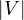 = n and = m.
, where V is the set of vertices and E ⊂ V × V is the set of edges. Usually, we denote
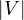 = n and = m.
There are different types of graphs:
Undirected:  ∈ E
∈ E  ∈ E. That is, the edges goes in both directions.
∈ E. That is, the edges goes in both directions.
Directed:  ∈ E ⁄
∈ E ⁄  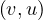 ∈ E. That is, the edges have direction, and it is possible that an edge
goes from u to v, but not the other way.
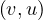 ∈ E. That is, the edges have direction, and it is possible that an edge
goes from u to v, but not the other way.
Weigthed vertices: the vertices have a weight. That is, there is a function wv : V → ℝ.
Weigthed edges: the edges have a weight. That is, there is a function we : E → ℝ.
Labeled vertices: the vertices have a label, Lv : V → , where is the set of labels.
, where is the set of labels.
Labeled edges: the edges have a label, Le : E →.
Bipartite: a graph G =  is bipartite if there is a partition of the vertices, V = V 1 ∪ V 2, such that
V 1 ∩ V 2 = ∅ and E =
is bipartite if there is a partition of the vertices, V = V 1 ∪ V 2, such that
V 1 ∩ V 2 = ∅ and E =  . That is, the vertices in V 1 only connect to vertices in
V 2, and viceversa.
. That is, the vertices in V 1 only connect to vertices in
V 2, and viceversa.
k-Partite: a graph G = is k-partite if there is a k-partition of the vertices, V = V 1 ∪V 2 ∪...∪V k,
such that V i ∩ V j = ∅,∀i≠j and the is no edge e =  such that u,v ∈ V i, for the same i.
such that u,v ∈ V i, for the same i.
Multigraph or multidigraph: in this case, there can be several edges between two vertices. For this, we define the edges as a separate set E, and a function r : E → V × V , that assigns the vertices related by that edge.
Hypergraph: in this case, E ⊂ 2V . That it, the edges can relate 0 or more vertices. In this case, it is more appropriate to interpret E as a set of classes or hierarchies, rather than edges.
Complete: a graph is complete if E = V × V .
Some examples are:

Continuing with definitions, let G =  be a graph (directed or undirected). Let di+ and di- denote the number of
edges coming out and coming to vi, respectively. The degree of vi is
be a graph (directed or undirected). Let di+ and di- denote the number of
edges coming out and coming to vi, respectively. The degree of vi is

Note that it counts double for undirected graphs.
Now, let Ni+ and Ni- the set of successors and predecessors of vi, respectively. Then, the set of neighbors of vi is

A path between two vertices, u,v ∈ V , denoted u ⇝ v, is a sequence of vertices , where
 ∈ E,∀i = 1,...,k. The length of a path, L, is the number of edges in the cycle, that is,
k.
∈ E,∀i = 1,...,k. The length of a path, L, is the number of edges in the cycle, that is,
k.
A cycle is a path from a vertex to itself, u ⇝ u.
The distance between two nodes, d , is the shortest path length between them:
, is the shortest path length between them:

The eccentricity of a node, ecc , is the greatest distance between u and any other vertex in the graph:
, is the greatest distance between u and any other vertex in the graph:

Note that this could be infinity if we cannot reach some node from u. Usually, we consider only reachable nodes, because this can give us information about the graph, but a value of infinity is not very informative.
The diameter of a graph, diam , is the greatest distance between two nodes in the graph:
, is the greatest distance between two nodes in the graph:

The radius of a graph, rad , is the minimum eccentricity of any vertex in the graph:
, is the minimum eccentricity of any vertex in the graph:

The center of a graph, C , is the set of all vertices of minimum eccentricity, i.e., the graph radius:
, is the set of all vertices of minimum eccentricity, i.e., the graph radius:

Example 2.1. Compute the diameter, radius and center of the following graphs:
The solution is the following:

In each node, we show its eccentricity. The diameter is 6, the radius is 3 and the center is c (in blue).
Solution:
In this case, the diameter is 5, the radius is 3 and the center is .
A partial graph of G =  is a graph G′ =
is a graph G′ =  , where E′⊂ E.
, where E′⊂ E.
A subgraph of G =  is a graph G′ = where V ′⊂ V and E′⊂ E. Note that partial graphs are also
subgraphs.
is a graph G′ = where V ′⊂ V and E′⊂ E. Note that partial graphs are also
subgraphs.
A graph G =  is said to be connected if, and only if, ∀u,v ∈ V,∃u ⇝ v.
is said to be connected if, and only if, ∀u,v ∈ V,∃u ⇝ v.
A (strongly) connected component of G =  is a subgraph Gcc =
is a subgraph Gcc =  , where ∀u,v ∈ V cc,∃u ⇝ v ∈ V cc.
That it, a connected subgraph. It is called strongly when the paths are directed.
, where ∀u,v ∈ V cc,∃u ⇝ v ∈ V cc.
That it, a connected subgraph. It is called strongly when the paths are directed.
A graph G =  is a tree if, and only if, G is a connected graph without cycles. In this case, the graph has
m = n - 1 edges.
is a tree if, and only if, G is a connected graph without cycles. In this case, the graph has
m = n - 1 edges.
A graph G = is a forest if, and only if, all connected components of G are trees.
BFS is a method to traverse the nodes of a graph, by starting at one node and traversing all its neighbours. Then, all neighbours of its neighbours, and so on.
For this, we use a FIFO queue. The algorithm is:
Example 2.2. Apply BFS in the following graph, starting at node A.
Q=[A]. We visit A’s neighbours:

Q=[F,G]. Now, by lexycographical order, we visit F’s neighbours:

Q=[G,B,E]. Now, we visit G’s neighbours. Since it has no new unvisited neighbours, there is no change.
Q=[B,E]. Now, we visit B’s neighbours:
Q=[E,C]. Now, we visit E’s neighbours:

Q=[C,D]. Everything is visited, so the queue will be slowly emptied!
In the case of DFS, the objective is also to traverse the whole graph. The difference is that in this case we try to go as deep as we can in the graph before visiting more neighbours.
It can be implemented with a stack, let it be a explicit stack, or an implicit one.
The implementation with an explicit stack is the following:
The implementation with an implicit stack is recursive, and is as follows:
A graph, G =  , with n vertices and m edges can be encoded using different structures:
, with n vertices and m edges can be encoded using different structures:
Adjacency matrix: a matrix A ∈ n×n, defined by
n×n, defined by

The adjacency matrix is symmetric for undirected graphs.
Adjacency list: a list L of length n in which each vertex holds a list of its neighbours:

If G is directed, the choice of the direction depends on the analytic needs.
Incidence matrix: a matrix B ∈n×m, defined by

Using graph traversal algorithms, propose an algorithm that computes the number of edges between a given vertex and all other vertices.
Given the following cycles with even and odd lengths (with the distances or depths from the grey vertex), what do you think about the case of graphs with an odd cycle (in number of edges)? Is this a characteristic property? State the general case.
Proposition: a graph contains a cycle C with an odd number of edges if, and only if, ∃ ∈ E|depth
∈ E|depth = depth
= depth .
.
Proof : first, we know that all edges connect vertices of ’neighbouring’ depths. That it, ∀ ∈ E, it holds
 ≤ 1.
≤ 1.
![[ = ⇒ ]](summary48x.png) By reduction ad absurdum, seeking a contradiction, suppose that ∀
By reduction ad absurdum, seeking a contradiction, suppose that ∀ ∈ C, with depth
∈ C, with depth ≠depth
≠depth .
This means that depth
.
This means that depth = depth
= depth ± 1. Therefore, there is, along the cycle, a node of even depth, followed by a
node of odd lenght, and so on. When we close the cycle, the final node is the inicial one, so its depth is 0 (even).
Therefore, we need an even number of edges, to conserve the parity.
± 1. Therefore, there is, along the cycle, a node of even depth, followed by a
node of odd lenght, and so on. When we close the cycle, the final node is the inicial one, so its depth is 0 (even).
Therefore, we need an even number of edges, to conserve the parity.
![[ ⇐= ]](summary54x.png) If there is an edge
If there is an edge  ∈ E with depth
∈ E with depth = depth
= depth , then we can consider the path tree that was used
to annotate the depths. In this tree, x and y have a first ancestor z in common, from which we can form an odd
cycle of size 2 ⋅
, then we can consider the path tree that was used
to annotate the depths. In this tree, x and y have a first ancestor z in common, from which we can form an odd
cycle of size 2 ⋅ + 1 by adding the edge
+ 1 by adding the edge  to this subtree starting at
z.
to this subtree starting at
z.
Propose an algorithm that determines if a graph contains an odd cycle.
In a bipartite graph, can there be a cycle with an odd number of edges? Is this a characteristic property?
No, it is not possible!
Proposition: A graph is bipartite if, and only if, all cycles are of even size.
![[ = ⇒ ]](summary60x.png) If the graph is bipartite, any path alternates between each vertex of each partition to create a cycle ending
by the initial vertex. Therefore, all cycles must be of even size.
If the graph is bipartite, any path alternates between each vertex of each partition to create a cycle ending
by the initial vertex. Therefore, all cycles must be of even size.
![[ ⇐= ]](summary61x.png) Consider the partition of vertices with even depth V 1, and the partition of vertices with odd depth
V 2.
Consider the partition of vertices with even depth V 1, and the partition of vertices with odd depth
V 2.
Since there is no odd cycle, then, from question 2, we know that ∀ ∈ E it is depth = depth ± 1. Therefore, the graph is bipartite.
Propose an algorithm that allows to determine if a graph is bipartite. Test your algorithm in the following graph. Is it bipartite? Justify your answer.

The algorithm is the same as in exercise 3, because of exercise 4.
The proposed graph is clearly not bipartite, because there are several odd cycles.
Graph coloring is a way of coloring the vertices of a graph in such a way that no two adjacent vertices share the same color. A 2-colorable graph is a graph that can be colored with only 2 colors.
What is the link with the previous exercise? Justify your answer.
Proposition: a graph is 2-colorable if, and only if, it is bipartite.
Proof : If it is 2-colorable, with colors red and blue. Then we take V 1 =  and V 2 =
and V 2 =  . G is clearly bipartite with this partition.
. G is clearly bipartite with this partition.
![[ ⇐= ]](summary68x.png) If it is bipartite, with partition V 1 and V 2, then we can color all nodes in V 1 in blue, and all
nodes in V 2 in red. The graph is 2-colorable.
If it is bipartite, with partition V 1 and V 2, then we can color all nodes in V 1 in blue, and all
nodes in V 2 in red. The graph is 2-colorable.
We want to write an algorithm, inspired by DFS search, which takes as input a graph, G =  ,
and which returns a pair where result is True if the graph is colorable, False otherwise,
and color is a dictionary associating a color 0 or 1 to each vertex. This algorithm should stop as soon
as possible when the graph is not 2-colorable.
,
and which returns a pair where result is True if the graph is colorable, False otherwise,
and color is a dictionary associating a color 0 or 1 to each vertex. This algorithm should stop as soon
as possible when the graph is not 2-colorable.
Compute the shortest path in the following graph using Dijkstra’s algorithm, starting at A:
We start with: dist =
| A | B | C | D | E | F | G |
| 0 | ∞ | ∞ | ∞ | ∞ | ∞ | ∞ |
Now, w = A and P =  . We update dist =
. We update dist =
| A | B | C | D | E | F | G |
| 0 | ∞ | ∞ | ∞ | ∞ | 3 | 1 |
Now, w = G and P =  . We update dist =
. We update dist =
| A | B | C | D | E | F | G |
| 0 | ∞ | ∞ | ∞ | 3 | 2 | 1 |
Now, w = F and P =  . We update dist =
. We update dist =
| A | B | C | D | E | F | G |
| 0 | 6 | ∞ | ∞ | 3 | 2 | 1 |
Now, w = E and P = . We update dist =
| A | B | C | D | E | F | G |
| 0 | 6 | 4 | 8 | 3 | 2 | 1 |
Now, w = C and P =  . We update dist =
. We update dist =
| A | B | C | D | E | F | G |
| 0 | 6 | 4 | 6 | 3 | 2 | 1 |
Now, w = B and P =  . dist does not change.
. dist does not change.
Finally, w = D and P = . dist does not change.
Given the following graphs:

Give the different representations of these graphs.
A1 =
|
|||||||
|  |
0 : |
1 :  |
2 :  |
3 : |
4 :  |
5 : |
B1 =
|
|||||||||||
|  |
A2 =
|
|||||||
|  |
0 :  |
1 : |
2 :  |
3 :  |
4 : |
5 :  |
B1 =
|
||||||||||
|  |
Compute A2,A3. What does Aijr represents?
Aijr represents the number of paths of length r from node i to node j.
What is the complexity of Ar? Is it possible to reduce it?
Computing Ar is O , since it requires r products of complexity O.
, since it requires r products of complexity O.
However, we can reuse some results to reduce the complexity:
If r is even, we can do Ar =  2.
2.
If r is odd, we can do Ar = A2.
Therefore, we can obtain Ar in O.
A norm is a function f that measures the size of a vector. It must satisfy the following properties:
f = 0 ⇐⇒ x = 0.
= 0 ⇐⇒ x = 0.
Linear on scale factors:
Triangle inequality:
A widely use family of norms are the p-norms:
with the most common one being the Euclidean norm, for p = 2:

The determinant of a square matrix is equal to the hypervolume of the parallelotope defined by the vectors of the matrix. It is 0 if, and only if, the set of vectors is colinear.
The determinant can be used for many things:
We can represents linear systems with matrices as Y = AX, and there are many methods to solve this efficiently.
With the determinant we can compute the characteristic polynomial of A, whose roots are the eigenvalues of A.
Some properties of the determinant are:
 = 1, where I is the identity matrix.
= 1, where I is the identity matrix.
 = 0 if A is singular (not invertible).
= 0 if A is singular (not invertible).
=  .
.
 =
=  .
.
 = cn
= cn , where n is the dimension of A.
, where n is the dimension of A.
A square matrix, A, is invertible (non-singular, non-degenerate), with inverse denoetd A-1, if ∃B such that
in this case, A-1 = B.
Properties of the inverse:
-1 = A.
-1 = T.
 -1 = B-1A-1.
-1 = B-1A-1.
 -1 = A-1 for c≠0.
-1 = A-1 for c≠0.
 = .
= .
An eigenvector or characteristic vector of a linear transformation, T, is a non-zero vector that changes by a escalar factor, λ, when transformed by T. That is, v is an eigenvector of the linear transformation T if

There is a direct correspondence between n×n matrices and linear transformation in the n-dimenstional vector space into itself. That is, every linear transformation T can be represented as a matrix AT (the matrix depends on the chosen base). Therefore, we can say that AT has an eigenvector v if

The scale factors of the eigenvectors are called eigenvalues.
We can find the eigenvalues by solving a polynomial function on λ called the characteristic polynomial of AT:

Now, this equation has non-zero solution if, and only if,

Therefore, we can compute and find all values of λ that makes it equal to 0.
Once we have the eigenvalues, we can use them to find the corresponding eigenvectors.
Example 2.4. Compute the eigenvalues and eigenvectors of A =  .
.

This has as solutions

Therefore, we have λ1 = 1,λ2 = 3.
To find the eigenvectors, we solve

For λ1 = 1, it is
so the eigenvector associated to λ1 = 1 is

For λ2 = 3, it is
so the eigenvector associated to λ2 = 3 is

We call the algebraic multiplicity, ti, of the eigenvalue λi to its multiplicity as root of the characteristic polynomial:
Note that A can have at most n distinct eigenvalues, although some of them may be complex.
The eigenspace of an eigenvalue, λ, is the spave generated by the eigenvectors associated to λ.
The dimension of the eigenspace of λ is the geometric multiplicity of λ. The geometric multiplicity of an eigenvalue is, at most, its algebraic multiplicity.
Example 2.5. Let’s get some eigenspaces:
A = , so
| = |  = =    + 4 + 4 | ||
| = | ![[(- 1- λ)(3- λ)+ 4]](summary145x.png) = =   | ||
| = |  | ||
| = |  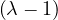2. 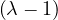2. |
This has roots λ1 = 1, with algebraic multiplicity 2, and λ2 = 2, with algebraic multiplicity 1.
Now, we get the eigenvectors associated to them:

For λ1 this is

so vλ1 =  , with dimension 1 (it could be 2).
, with dimension 1 (it could be 2).
For λ2 this is
so vλ2 =  , with dimension 1 (it could not be differently).
, with dimension 1 (it could not be differently).
B =  , so
, so
 = = | =   + 18 + 18 | ||
| = |  = =  | ||
| = |   = =  2. 2. |
This has roots λ1 = 1, with algebraic multiplicity 2, and λ2 = -2, with algebraic multiplicity 1.
Now, we get the eigenvectors associated to them:
For λ1 = 1, we have

Therefore, the eigenspace associated to λ1 is

For λ2 = 2, we have

Thus, the eigenspace associated to λ2is
C =  ,
,
| = | =  2 2 - 2 - 2 | ||
| = |  ![[(1 - λ)(2- λ)- 2]](summary184x.png) | ||
| = |   | ||
| = |  | ||
| = |   λ. λ. |
λ1 = 0:

so

λ2 = 1:

so

λ3 = 3:

so
D =  ,
,
 = = |  | ||
| = |    + 12 + 2 - 8 + 12 + 2 - 8 + 1 - λ + 3 + 1 - λ + 3 | ||
| = |  - 4 + 4λ - 4 + 4λ | ||
| = | - 2 - 2λ + 3λ + 3λ2 - λ2 - λ3 - 4 + 4λ | ||
| = | - λ3 + 2λ2 + 5λ - 6 |
To obtain the roots, we can use Ruffini:
| -1 | 2 | 5 | -6 | |
| 1 | -1 | 1 | 6 | |
| -1 | 1 | 6 | 0 | |
So λ1 = 1 is a root and we have now -λ2 + λ + 6 = 0, obtaining
and we get λ2 = -2 and λ3 = 3.
λ1 = 1:

Then, E = .
= .
λ2 = -2:

Then, E =
=  .
.
λ3 = 3:

Then, E = .
E = ,
 = = | |||
| = |   2 + 4 + 4 - 4 2 + 4 + 4 - 4 - - 4 - - 4 | ||
| = | + 2 - 8 + λ | ||
| = | 54 - 36λ + 6λ2 - 9λ + 6λ2 - λ3 - 22 + 8λ + λ | ||
| = | - λ3 + 12λ2 - 36λ + 32. |
Again, we can use the Ruffini rule:
| -1 | 12 | -36 | 32 | |
| 2 | -2 | 20 | -32 | |
| -1 | 10 | -16 | 0 | |
So λ1 = 2 is a root, and we now have -λ2 + 10λ - 16 = 0, which gives us

Therefore, λ1 is a double root and the other root is λ2 = 8.

λ1 = 2:

If x = 0: y = z.
If x = t≠0: -y + z = -2t, working for y = t and z = -t.
So

λ2 = 8:

Therefore,

F =  ,
,
 = = |  | ||
| = | - λ 2 2 + 2 - λ + 2 - λ | ||
| = |  ![[- λ (2 - λ)+ 1]](summary247x.png) | ||
| = |   | ||
| = |   2. 2. |
One root is λ1 = 1 with algebraic dimension 2, and λ2 = 2 with algebraic dimension 1.
λ1 = 1:

If x = 0: y = -z.
If x = t≠0: y + z = -t. This works for y = t,z = -2t.
Therefore,

λ2 = 2:

So

Another way to represent eigenvalues and eigenvectors is

where V = ![[v1,...,vn]](summary259x.png) is the matrix formed by putting each eigenvector as a column, and
is the matrix formed by putting each eigenvector as a column, and
is the diagonal matrix formed by all eigenvalues.
A matrix A is diagonalizable if there exist n linearly independent eigenvectors. That is, if the matrix V is invertible:

This leads naturally to the eigen-decomposition of the matrix,
A real matrix, U, is orthogonal if UTU = UUT = I.
Example 2.6. Some examples of orthogonal matrices:
Identity: I
Permutation of coordinates: 
Rotation: .
Reflection: .
A matrix A is said to be positive semi-definite when it can be obtained as the product of a matrix by its transpose:

Positive semi-definite matrices are always symmetric, because

A symmetric matrix A is positive semi-definite if all its eigenvalues are non-negative.
In this case, since eigenvectors are orthogonal, it is possible to store all the eigenvectors in an orthogonal matrix.
Therefore, the eigen-decomposition of a positive semi-definite matrix, A, could be

with U an orthogonal matrix.
As a consequence, the eigen-decomposition of a positive semi-definite matrix is often referred to as its diagonalization.
An alternative definition for positive semi-definite matrix is:
A is positive semi-definite if xTAx ≥ 0,∀x.
If it is xTAx > 0,∀x, then it is positive definite.
If it is xTAx ≤ 0,∀x, then it is negative semi-definite.
If it is xTAx < 0,∀x, then it is negative definite.
The rank of a matrix is the dimension of the vector space generated by its columns (or rows). This corresponds to the maximum number of linearly independent columns of A. A matrix whose rank is equal to its size is called a full rank matrix. Only full rank matrices have an inverse.
We can now define the Laplacian matrix for undirected graphs, as
or, equivalently,

where A is the degree is the matrix of G, and A its adjacency matrix.
What could you say about these matrices?
A =  , det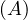 = -
, det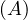 = - , A is invertible. Its eigenvalues are λ1 = -1+
, A is invertible. Its eigenvalues are λ1 = -1+ and λ2 = -1-,
with vλ1 =
and λ2 = -1-,
with vλ1 =  and vλ2 = .
and vλ2 = .
B =  . The second row is equal to the first row multiplied by -
. The second row is equal to the first row multiplied by - . Therefore, it is not
invertible.
. Therefore, it is not
invertible.
I: its determinant is 1. It is symmetric, orthogonal, its own inverse. Triple eigenvalue 1, with eigenspace the whole space.
Show that An = XΛX-1.
First, this is only true if A is diagonalizable. If that is the case, then we can proceed by induction on n:
n = 1: Obvious.
n = 2:
Suppose it is true for n - 1:

Then, for n, we have:
Find the eigenvalues and unit eigenvectors of ATA and AAT with A = the Fibonnaci matrix.
First of all, notice that A is symmetric, so ATA = AAT = A2 =  .
.
= 
 - 1 = 2 - 3λ + λ2 - 1 = λ2 - 3λ + 1. The roots of this polynomial
are
- 1 = 2 - 3λ + λ2 - 1 = λ2 - 3λ + 1. The roots of this polynomial
are

Now,

Therefore

with unit eigenvector v1 = 
 .
.
And
with unit eigenvector v2 =  .
.
Without multiplying
find the determinant, the eigenvalues and eigenvectors. Why S is positive definite?
We have S = UΛUT with U orthogonal. Therefore, the eigenvalues of S are 2 and 5. Its determinant is 10. The eigenvectors are the eigenvectors of Λ rotated as well, that is:

S is positive definite because

now note that

so
because is positive semi-definite (symmetric with positive eigenvalues).
For what numbers c and d are the following matrices positive definite?
A = : all principal minors must be positive. That is:
c > 0.
 = c2 - 1 > 0. Combined with the previous one, this is c > 1.
= c2 - 1 > 0. Combined with the previous one, this is c > 1.
 = c3+2-3c. Roots: 1,
= c3+2-3c. Roots: 1,
| 1 | 0 | -3 | 2 | |
| 1 | 1 | 1 | -2 | |
| 1 | 1 | -2 | 0 | |
Therefore, it is c > 1.
B =  :
:
1 > 0.
= d - 4 > 0 ⇐⇒ d > 4.
 = 5d + 24 + 24 - 9d - 16 - 20 = -4d + 12 > 0 ⇐⇒ - 4d > -12 ⇐⇒ d < 3.
= 5d + 24 + 24 - 9d - 16 - 20 = -4d + 12 > 0 ⇐⇒ - 4d > -12 ⇐⇒ d < 3.
Therefore, there is no value for d for which B is positive.
Show that if λ1,λ2,...,λn are the eigenvalues of a matrix A, then Am has as eigenvalues λ1m,λ2m,...,λnm.
Induction on m.
m = 1: Obvious.
m = 2: Let vi be the eigenvector associated to λi, then

so λi2 is an eigenvalue of A2, with associated eigenvector vi.
Suppose it is true for m - 1, then, for m:

and we have the result.
What is the determinant of any orthogonal matrix?
If U is orthogonal, then UUT = I. Then,
Therefore, = ±1.
For an undirected graph, both the adjacency matrix and the Laplacian matrix are symmetric. Show that the Laplacian matrix is positive semi-definite.
Remark 3.1. Observe that it is not the same for a matrix to be positive as to be positive semi-definite.
The Perron-Frobenius theorem for non-negative matrices leads to the characterization of non-negative primary eigenvectors. This is useful in stationary distributions, such as those of Markov chains and the famous Google’s page rank algorithm.
Theorem 3.1. Perron-Frobenius Theorem for positive matrices
If A is a positive matrix, then:
∃λ* > 0,v* > 0, 2 = 1 such that A ⋅ v = λ*v* (v* is a right column eigenvector).
2 = 1 such that A ⋅ v = λ*v* (v* is a right column eigenvector).
∃λ* > 0,w > 0, 2 = 1 such that w ⋅ A = λ*w (w is a left row eigenvector).
2 = 1 such that w ⋅ A = λ*w (w is a left row eigenvector).
For any other eigenvalue, λ, it holds,  < λ* (λ* is a dominant eigenvalue, called the Perron
eigenvalue).
< λ* (λ* is a dominant eigenvalue, called the Perron
eigenvalue).
λ* is unique and v* is unique (the only vector of unit length associated to λ*).
Theorem 3.2. Perron-Frobenius Theorem for non-negative matrices
If A is a non-negative matrix, then:
∃λ* > 0,v*≥ 0, 2 = 1 such that A ⋅ v = λ*v* (v* is a right column eigenvector).
2 = 1 such that A ⋅ v = λ*v* (v* is a right column eigenvector).
∃λ* > 0,w ≥ 0, 2 = 1 such that w ⋅ A = λ*w (w is a left row eigenvector).
2 = 1 such that w ⋅ A = λ*w (w is a left row eigenvector).
For any other eigenvalue, λ, it holds,  ≤ λ* (λ* is a dominant eigenvalue, called the Perron
eigenvalue).
≤ λ* (λ* is a dominant eigenvalue, called the Perron
eigenvalue).
If A is irreducible, then the vector v* is unique and it holds v* > 0.
If A is primitive, then the eigenvalue λ* is unique.
Note now that a graph, G = , with adjacency matrix A, then: G is connected ⇐⇒∀1 ≤ i,j ≤ ,∃k ∈ ℕ* such
that Ai,jk > 0. This means that the adjacency matrix of connected graphs is irreducible.
,∃k ∈ ℕ* such
that Ai,jk > 0. This means that the adjacency matrix of connected graphs is irreducible.
Now, if a graph is k-connected, i.e., there is a k-path between all nodes, then its adjacency matrix is primitive. One sufficient condition for a graph to be k-connected is being connected and having Aii > 0 for some i.
A random walk on a graph, G =  , is a random process that starts from some vertex vi, and repeatedly moves to
a neighbour vj chosen at random (for example with uniform distribution). The random walk, ξt, is therefore a random
variable describing the position of a random walk after t steps. The probability of going from node i to node j is the
transition probability,
, is a random process that starts from some vertex vi, and repeatedly moves to
a neighbour vj chosen at random (for example with uniform distribution). The random walk, ξt, is therefore a random
variable describing the position of a random walk after t steps. The probability of going from node i to node j is the
transition probability,

The sequence of nodes can be regarded as a Markov chain, i.e. a discrete time stochastic process, where the position ξ0 is the initial state, according to the init distribution, P0, and from this point the next state only depends on the current state. The t-step transition probability is
Some examples are the path traced by a molecule in a liquid or a gas (Brownian motion), the price of a fluctuating stock, the financial status of a gambler, etc. The term random walk was first introduced by Karl Pearson in 1905.
The following is a basic visual example of a random walk on a graph:

Note that we can express the transition probability Pij in a matrix P. This matrix is the transition probabilities matrix, and it is row-stochastic or row-Markov, meaning,
This implies that
This means that  is an eigenvector and 1 is an eigenvalue. 1 is the largest eigenvalue because
is an eigenvector and 1 is an eigenvalue. 1 is the largest eigenvalue because
so, for an eigenvalue λ,

so ≤ 1.
From the Perron-Frobenius theorem for non-negative matrices, we know that:
v* =  is a right Perron eigenvector for P.
is a right Perron eigenvector for P.
 ≤ λ* = 1 is a Perron eigenvalue.
≤ λ* = 1 is a Perron eigenvalue.
There exists a left Perron eigenvector πP = π.
If P is irreducible, the vector π is unique.
If P is primitive, the eigenvalue 1 is unique (there are no complex eigenvalues with norm 1).
Let πt be the row vector giving the probability distribution of ξt, that is, πit is the probability that the random walk is at node i at time t. Therefore, we can write
which, applied recursively, leads to
Or, we can take limits
If this limit exists, limtπt = π, then
Convergence is ensured if P is irreducible.
A common way to perform random walks on graphs is with the uniform probability. That is,
where di is the degree of node i. Equivalently,
The random sequence of vertices ξ0,ξ1,...,ξt,ξt+1,... visited on G is a Markov Chain with state space V and matrix transition probabilite P = D-1A.
A probability distribution π satisfies the balance condition if

If π satisfies the balance condition, then it is the stationary distribution for the undirected graph. To see this, notice that the balance condition can be rewritten as
Since the graph is considered without direction, Aij = Aji, and then
where c is a constant, for all i,j. Now, we know that ∑ iπi = 1, so

Therefore

Finally, it must be
In this case:
Therefore, we have seen that the stationary probabilities are proportional to the degrees of the vertices.
In particular, if G is d-regular, i.e., all nodes have degree d, then
is the uniform distribution. With this setup, a random walk moves along every edge with the same frequence.
The balance condition implies time-reversibility: the reversed walk is also a Markov chain.
Remark. In general, Hij≠Hji, so H is not symmetric.
The lazy random walk is a variation of the random walk, in which the walk stays at the current node with probability
 , and continue with the walk with the rest of the probability.
, and continue with the walk with the rest of the probability.
In this case, the transition matrix is

If Q is the transition matrix for the uniform random walk, then

Proof. Let Q be the transition matrix for the uniform random walk, then, the stationary distribution is
For lazy random walk, say the stationary distribution is π′. Then:

Therefore, since Q is irreducible, the uniqueness of π implies π′ = π. __
The web is very heterogeneous bu nature, and certainly huge. We cannot expect the web graph to be connected. Page and Brin proposed a way to overcome this problem, by ensuring the convergence of random walks on the web graph.
The idea is to fix a positive constant, p, between 0 and 1, called the damping factor, and which represents the probability that a user leaves the current page and goes to a random web.
Therefore, the page rank transition matrix is
where B = .
p is usually chosen small, like 0.15, modelling a situation in which a surfer will, most of the time, follow the outgoing links and move on to one of the neighbours. A smaller percentage of time, the surfer will dump the current page and choose arbritrarily a different page from the web.
Proof. We need to proof that, for all i, it holds ∑ jPgi,j = 1.
| ∑ jPgi,j = | ∑ jPij + pBij | ||
| = |  ∑
jPij + p∑
jBij ∑
jPij + p∑
jBij | ||
| = |  ⋅ 1 + p∑
j ⋅ 1 + p∑
j | ||
| = | 1 - p + p ⋅ n | ||
| = | 1 - p + p | ||
| = | 1. |
Centrality Measures try to answer the question ’What characterizes an important vertex?’. They define a real-valued function on the vertices of the graph, m : V → ℝ, that serves to rank the vertices. However, there are many different ways to define such function, leading to different definitions of centrality, such as cohesiveness, ability to transfer information across the network, to influence other nodes, to control information flow, etc.
There are many centrality measures that count the number of paths through a given vertex. These differ in how relevant walks are defined and counted. For example, if we only consider paths of length one, we would be computing degree centrality, while if we allow paths of arbitrary length, we would be computing eigenvalue centrality.
The more neighbours a vertex has, the higher its communication ability is, increasing its importance.
Example 4.1. Consider the following graph:
The degree centrality is
so the nodes with highest value are nodes .
One drawback of this measure, is that it is very likely that several nodes present the same exact value, difficulting an unique ranking of vertices.
This measure correspond to the average degree of each vertex neighbours. We could understand this measure as measuring how much a vertex is related to influencial vertices.
Example 4.2. The neighbourhood centrality of the previous example graph is

so the nodes with highest value are nodes .
A natural extension of degree centrality is to consider all reachable nodes, not just neighbours. Eigenvector centrality measures a node’s importance while considering the importance of its neighbours. A high eigenvector centrality means that a node is connected to many nodes that have high scores themselves.
This means that E is an eigenvector of A, for the eigenvalue λ.
Bonacich suggested that the eigenvector of the largest eigenvalue of A could make a good network centrality measure.
The eigenvector E must be non-negative and according to the Perron-Frobenius theorem, the largest λ enforces this property, making it a suitable value.
Example 4.3. Let’s compute E for the previous example graph. The matrix A has as largest eigenvalue λ = 2.54, and the corresponding eigenvector is
Note that it is usually unfeasible to compute the eigenvalues and eigenvectors. It is more usual to get the vector iteratively as
Google’s PageRank is a variant of the eigenvector centrality, which uses in-degree to award one centrality point for every link a node receives. As we saw, the algorithm is based on a web surfer who is randomly clicking on links, with a certain probability to go to a different place of the web (the damping factor).
Therefore, we define the matrix
where Pij = , and Bij =  .
.
Now, we apply the eigenvector centrality to this modified matrix, as
with λ = 1 because Pg is stochastic.
Or, iteratively as
Note that in this case it is not necessary to normalize the vector at each step, because Pg is stochastic. A good Eg0 is Eg0 = .
The main problem with eigenvector centrality is that it only works well when the graph is strongly connected (so Perron-Frobenius is applicable in its stronger form). Real networks do not usually have this property, specially if they are directed. The vertices that are not in strongly connected components will have value 0.
A way to work around this problem was proposed by Leo Katz. The idea is to give each node a minimum, positive amount of centrality, that it can transfer to other nodes, so:

where Kv is the Katz centrality of node v, β is a vector whose elements are all equal to a given positive constant and α ∈ is a parameter. Equivalently, this is
so
and
For this to work, I -αA must be invertible, which happens if and only if ≠0 ⇐⇒≠0, so must not be an eigenvalue of A. This is ensured if we take > λmax, or 0 < α < .
An iterative way to compute K is
The strength of α decreases at each iteration, acting as attenuation factor.
Triadic closure is the property among three nodes A, B, and C (representing people, for instance), that if the connections A-B and A-C exist, there is a tendency for the new connection B-C to be formed.
The clustering coefficient measures the proportion of neighbours of each node, that connected to each other.
The more densely connected the neighbourhood of v is, the higher is its clustering coefficient.
Closeness centrality is a measure of how close a node is, on average, to the rest of the nodes, in terms of shortest paths. It measures the average distance between a node v and all other nodes in the network. Thus, the more central a node is, the closer it is to all other nodes.
An alternative is the harmonic centrality, obtained as
with dist = 0 if there is no path from v to r.
A family of betweenness measures are defined to capture a node’s importance as a conduct of information flow in the network. This has wide applications in network theory, because in a telecommunications network, a node with higher betweenness centrality would have more control over the network, since more information will pass through that node.
The most well-known betweenness metric measures the number of times a node is on a shortest path between two nodes.
Definition 4.6. Given a graph G =  , the betweenness centrality of node v is
, the betweenness centrality of node v is

where σs,t is the number of shortest path from source node s to target node t, and σs,t is the number
of shortest path between these two nodes going through v.
is the number
of shortest path between these two nodes going through v.
This measure can be normalized by the number of ordered pairs not including v:
For directed graphs
For undirected graphs
Example 4.5. For the undirected star graph:
The center vertex has a betweenness of (or 1, if we normalize it), while the leaves have a betweenness of 0.
The advent of big data and the increasing analysis needs favorised the design of parallel algorithms, specially in the realm of big data processing pipelines, with a tradeoff between communication costs and degree of parallelism.
MapReduce is a processing paradigm that works on top of distributed environments. More precisely, it was built on top of Google File System (GFS) and Hadoop Distributed File System (HDFS), used to manage large-scale data and to be tolerant to hardware and networks faults. To do this, HDFS splits files into large blocks and distributes thema cross nodes in a cluster, and MapReduce is the programming model used to manage many large-scale parallel computations.
Basically, the idea is that the data is first splitted, then some operation is done to it, and then it’s merged to produce the final results. For this, we will just need to define the Map and Reduce functions, while the system manages the parallel execution on distributed data and the coordination between them, leading with the possibility that one of the tasks may fail.
Consider a text file splitted into partitions A,B,C,D, across different nodes. We want to count how many times each word appears in the whole document. For this, we can use MapReduce as follows:
Map: for each word, w, in each partition, generate the pair .
Shuffle/sort: collects and groups the pairs by key (word), in order to guarantee that the same key will be processed by the same reduce task. Shuffling is the process of redistributing data from Map nodes to Reduce nodes.
In our example, we would have, for each word w, the pairs , with as many 1s as w appearances.
Reduce: for each input , output , where Nw is the amount of 1s.
The Map task will typically process many words in one or more chunks. If a word, w, appears m times among all chunks assigned to that process, there will be m key-value pairs among its output.
To perform the grouping and distribution to the Reduce task, the master controller merges the pairs by key and produces a sequence of . Since it knows how many reduce tasks there will be, r, it will produce r lists, putting a list in one of r local files destined to one of the Reduce tasks. Each key is assigned as input to one, and only one, Reduce task.
The Reduce task executes one or more reducers, one per key. The outputs from all reducers are merges into a single final file.
In general, a map function can be defined as a function, mf : E1n → E2n, where Ei is the domain of the input (1) or output (2) and f : ℝ → ℝ, that applies f to each coordinate. That is:
For example:
In the MapReduce scheme, map is more restrictive, as the function f must produce a key-value pair. That is, for all i = 1,...,n, it is
For example, in the word counter example:
The shuffle function consists in grouping the outputs of the map function by key, so
Following the previous example:
Generally, a reduce function applies to a vector/row, and outputs a single value, applying the aggregation function f:
In MapReduce, reduce applies to each output of the shuffle function with the same key:
Following the previous example:
A MapReduce pipeline can be a composition of different rfr ∘ s ∘ mfm.
The process is illustrated below:

Whenever we launch the execution of a MapReduce pipeline, the following happens:
The user program forks a master controller process and some number of worker processes at different computer nodes.
The amster creates some number of map tasks and some number of reduce tasks. It assigns the tasks to worker processes by taking into account the co-location.
A worker handles either map tasks (a map worker) or reduce tasks (a reduce worker), but not both.
A worker process reports to the amster when it finishes a task, and a new task is scheduled by the master for that worker process.
The master keeps track of the status of each map and reduce task (idle, executing, or completed).
If the master node fails, the entire MapReduce job must be restarted.
If a worker node fails, it would be detected and managed by the master, since it periodically pings the worker processes. All the map tasks assigned to this worker have to be redone in this case.
This paradigm is not a solution to every problem, and in fact it only makes sense when files are very large, and rarely outdated. Its original purpose was to execute very large matrix-vector multiplications.
Let M be a n × n squared matrix and V a vector of size n. Their product,
is defined by
We can store M and V in a file in HDFS as triples for M and pairs for V 1 . Now we can compute the computation by MapReduce as:
Map: for each and  , it returns .
, it returns .
Reduce: simply sums all the values for each key i, producing the pair .
For this to work, all the pairs from V must be available in all chunks (V cannot be stored distributely).
More concretely, we can define the functions:
Now, if n is large, V might not fit in main memory of a worker node, and a large number of disk accesses may be required. We can improve the approach by distributing V and refining the algorithm as follows:
We devide the matrix into vertical stripes of equal width, and the vector in strips of the same size:
Here, the size of Mk is n×nk and the size of V k is nk, so that the product Mk ⋅V k can be performed, outputing a vector of size n.
Each map task is assigned a chunk from one of the matrix stripes and gets the entire corresponding stripe of the vector.
The final result would be
where we apply the previously explained algorithm to each sub-multiplication step.
This approach can be extended to matrix multiplication. Now, let M be a matrix of size n1 ×n2 and N a matrix of size n2 × n3, the product P = MN is a matrix of size n1 × n3, where
The matrices are stored as and  .
.
Map 1: transform into and  into .
into .
Reduce 1: for each key, j, produces the key-value pair .
Map 2: the identity.
Reduce 2: for each key, , produce the sum of the list of values associated to this key, .
In addition, M could be divided into K vertical stripes of size and N into K horizontal stripes of size , where ∑ knk = n2. In this setup, we can apply the algorithm to compute each Mk ⋅ Nk and then sum them all.
The functions can be defined more precisely as:
Let R be a relation stored as a file in HDFS. The elements of this file are the tuples of R. The selection operator, σC can be defined using MapReduce as:
Map: for each tuple in R, t, test if t satisfies C. If it does, produce the key-value pair .
Reduce: the identity.
For the projection, πA , we can do:
, we can do:
Map: for each tuple in R, t, construct a tuple t′ by removing the attributes that are not in A. Output
 .
.
Reduce: for each key, t′, produced by the map tasks, there will be one or more key-value pairs . The reduce function turns into so it produces exactly one pair.
R
 BS with A,B,C sets of attributes satisfying B ⊂ A,B ⊂ C, can be implemented with MapReduce
as:
BS with A,B,C sets of attributes satisfying B ⊂ A,B ⊂ C, can be implemented with MapReduce
as:
Map: for each tuple  ∈ R, produce the key-value pair . For each tuple 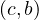 ∈ S, produce
the key-value pair .
∈ R, produce the key-value pair . For each tuple 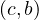 ∈ S, produce
the key-value pair .
Reduce: for each key, b, output as many pairs as needed, .
The aggregation operator, γA,θ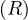, where A ∪ B is the set of attributes of R, and A ∩ B = ∅, can be defined with MapReduce as:
Map: for each tuple, t, produce  , where a is the A part of t, and b is the B part.
, where a is the A part of t, and b is the B part.
Reduce: each key represents a group, so we apply θ to the list associated to each value a. We output , where x = θ.
Locality: input data is stored on local disks of machines in the cluster. Each file is divided into blocks of 64MB, each of which is stored several times, as replicas, on different machines. MapReduce master node takes the location information of the input files into account, and attempts to schedule a map task on a machine that contains the needed replica. If this fails, it tries to schedule a map task in a machine that is near to one that has a replica.
Granularity: the amp and reduce steps are divided into M and R pieces. M and R should be much larger than the number of workers. Each worker can perform different tasks, improving dynamic load balancing and speeding up recovery when a worker fails. Some practical bounds on how large these values should be say that the master should take M + R scheduling decisions and keep M × R states in memory.
Refinements: partitioning input data using different functions according to the problem to be solved.
Ordering guarantees: the intermediate key-value pairs are generally processed in increasing key order, to make it easy to generate a sorted output file per partition. However, this is not guaranteed.
Nowadays, data is growing faster than processing speeds, and so the only possible solution is to parallelize on large clusters.
Apache Spark is an open source implementation of a framework for large-scale data processing, providing an interface for programming clusters with implicit data parallelism and fault tolerance. It extends a programming language with read-only data structure distributed over a cluster of machines, the Resilient Distributed Datasets (RDDs), maintained in a fault-tolerant way. RDDs were developed in 2012 in response to limitations in Hadoop’s MapReduce, which forces a particular linear dataflow as a sequence of HDFS reads and writes.
Spark is up to 100 times faster than traditional Hadoop thanks to its in-memory data processing:
Spark was originally written in Scala, a high level language for JVM. There are APIs for Java, Scala, Python, R,...
The Dataframe API was released as an abstraction on top of the RDD, as well as packages like MLlib or GraphX, that can be used for machine learning and graph analytics. These APIs facilitate the implementation of both iterative algorithms and interactive or exploratory data analysis.
Spark requires a cluster manager and a distributed storage system:
Cluster management: Spark supports standalone, native Spark clusters, where we can launch a cluster either manually or using scripts, or we can use Hadoop YARN, Apache Mesos, or Kubernetes.
Distributed storage: Spark cna interface with a wide variety of distributed databases, like Alluxio, HDFS, MapR-FS, Cassandra,...
Spark also supports different sources of data, in different formats and from different databases. All these relationships are shown below:
Data is splitted into partitions or blocks, and the driver assigns tasks to each worker, which reads a HDFS block, and has a cache. Each worker process and cache data, if necessary, sending the results to the driver when done.
RDDs are immutable and distributed collections of objects, spread across a cluster, and stored in RAM or disk (when they are persistent). They are statically typed, i.e., RDD[T] has objects of type T. The types can be of any type of Python, Java, or Scala objects, including user-defined classes.
RDDs are built via parallel transformations and computed via parallel actions on distributed datasets, executed lazily. For instnace, RDDs are splitted into multiple partitions, which may be computed on different nodes of a cluster.
Transformation: operation on an RDD that returns a new RDD. They are computed lazily, only after an action is called.
Action: operation on an RDD that returns a final result which is not another RDD. When an action is called, all the transformations prior to it are executed in the same order they were defined. Each time a new action is called, the entire RDD must be computed from scratch, but the user can deide to persist intermediate result (caching).
Inside Apache Spark, the workflow is managed as a directed acyclic graph (DAG). Nodes represents RDDs while edges represent the operations executed on the RDDs. Spark keeps track of the set of dependencies between different RDDs. This is called the lineage graph.
Example 6.1. Python Example: first line mentioning Python
Some notes:
Once a SparkContext, sc, is set, it is used to build RDDs. The driver program manages a number of workers, and different workers on different machines might count lines in different ranges of the file.
filter does not mutate the existing input RDD. Instead, it returns a pointer to a new RDD.
does not mutate the existing input RDD. Instead, it returns a pointer to a new RDD.
Many transformations work on one element at a time, but this is not true for all transformation, like union.
map is used from different purposes, from fetching a large collection to just squaring numbers. It
transforms an RDD of length N into another RDD of length N, applying a function to each element in
the RDD. For example:
is used from different purposes, from fetching a large collection to just squaring numbers. It
transforms an RDD of length N into another RDD of length N, applying a function to each element in
the RDD. For example:
flatMap transforms an RDD of length N into a collection of N collection, then flatterns these into a single
RDD of results, applying a function to each collection. For example:
transforms an RDD of length N into a collection of N collection, then flatterns these into a single
RDD of results, applying a function to each collection. For example:
reduce is the most common action on basic RDDs. It operates on two elements of the type of the RDD and returns a new element of the same type. For example:
reduceByKey operates on RDD of key-value pairs. It runs several parallel reduce operations, for each key,
where each operations combines values that have the same key. It returns a new RDD consisting of each key and
the reduced value for that key. For example:
operates on RDD of key-value pairs. It runs several parallel reduce operations, for each key,
where each operations combines values that have the same key. It returns a new RDD consisting of each key and
the reduced value for that key. For example:
groupByKey and sortByKey return the RDD with the values grouped or sorted by the keys. For
example:
and sortByKey return the RDD with the values grouped or sorted by the keys. For
example:
distinct produces a new RDD with only distinct items.
produces a new RDD with only distinct items.
union produces a new RDD consisting of the data from both sources, removing duplicates.
produces a new RDD consisting of the data from both sources, removing duplicates.
RDD.subtract produces a new RDD consisting in all values present in RDD but not in
otherRDD.
produces a new RDD consisting in all values present in RDD but not in
otherRDD.
RDD.cartesian returns of possible pairs 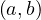 where a ∈ RDD and b ∈ otherRDD. Note that this operation is very costly.
RDD.innerJoin(otherRDD) returns only keys that are present in both pairs to the output RDD.
RDD.leftOuterJoin and RDD.rightOuterJoin join the two RDDs together by key,
allowing one of them to miss the key (left or right). For example:
and RDD.rightOuterJoin join the two RDDs together by key,
allowing one of them to miss the key (left or right). For example:
collect is used to retrieve the entire RDD. It is useful if it filters RDDs down to a very small size to deal
with it locally at the driver. The retrieved dataset must fit in memory in a single machine.
is used to retrieve the entire RDD. It is useful if it filters RDDs down to a very small size to deal
with it locally at the driver. The retrieved dataset must fit in memory in a single machine.
take is used to retrieve a small number of elements in the RDD at the driver program and then iterate them over them locally.
top is used to extract the top elements.
is used to extract the top elements.
takeSample allows to take a sample of the data either with out without replacement.
foreach performs computations on each element in the RDD without bringing it back locally.
performs computations on each element in the RDD without bringing it back locally.
count returns a count of the elements.
returns a count of the elements.
countByV alue returns a map of each unique value and its count.
returns a map of each unique value and its count.
Spark RDDs are lazily evaluated, and sometimes we use the same RDD multiple times. Naively, Spark will recompute
the RDD and all of tis dependencies each time we call an action on the RDD. To avoid this, we can ask Spark to persist
data using persist .
.
Notice that calling persist does not force the evaluation of the RDD.
does not force the evaluation of the RDD.
If we cache too much data, Spark will automatically delete old partitions. For the memory-only storage levels, it will recompute these partitions the next time they are accessed. This means that caching unnecessary data can lead to eviction and increased re-computation time.
Example 7.1. In the following picture2 , we observe the brute force process to find all 4-cliques in this 7-node graph. For this, we need to check C74 combinations.
Most versions of clique problems are hard, and a common problem is that of finding maximal cliques. This is, cliques with the largest number of nodes. For this problem, we have different algorithms, like:
Bron-Kerbosch algorithm, with complexity O.
Tarjan and Trojanowski algorithm.
Janez Konc algorithm.
There are also algorithms with better theoretical complexity, but Bron-Kerbosch and some variants that improve it are more efficient in practice. The basic form of the algorithm is as follows:
For example, the following tree represents the execution of the algorithm for the shown graph:
k-Cliques are interesting as a concept, but they are very restrictive, and so some relaxations have been proposed. A very well known one are k-Cores [1]. The basic idea is that networks may present a core-periphery structure, where in the core there are a lot of connected nodes, while in the periphery we find a more sparse structure, with peripheral nodes called whiskers.
The approach to find k-cores is k-core decomposition. The idea is that, given a graph G =  , we delete
recursively all vertices, and edges connecting them, of degree less than k, to extract the k-core, such
that:
, we delete
recursively all vertices, and edges connecting them, of degree less than k, to extract the k-core, such
that:
Each vi in a k-core graph has di ≥ k.
A -core is a subgraph of a k-core graph.
The algorithms goes as:
Example 7.2. Let’s go through an example:
First, we initialize d and D:
| i | 1 | 2 | 3 | 4 | 5 | 6 | 7 | 8 | 9 | 10 | 11 | 12 | 13 | 14 | 15 | 16 | 17 | 18 | 19 | 20 | 21 | 22 | 23 | 24 | 25 |
| d[v_i] | 4 | 6 | 5 | 7 | 4 | 6 | 5 | 5 | 2 | 2 | 2 | 3 | 4 | 4 | 4 | 3 | 3 | 5 | 3 | 2 | 3 | 1 | 1 | 1 | 1 |
| d[v_i] | 7 | 6 | 5 | 4 | 3 | 2 | 1 |
| D[d[v_i]] | [4] | [2,6] | [3,7,8,18] | [1,5,13,14,15] | [12,16,17,19,21] | [9,10,11,20] | [22,23,24,25] |
Now, we start the procedure. For k = 1, the first node to be taken out would be 22, so:
| i | 1 | 2 | 3 | 4 | 5 | 6 | 7 | 8 | 9 | 10 | 11 | 12 | 13 | 14 | 15 | 16 | 17 | 18 | 19 | 20 | 21 | 22 | 23 | 24 | 25 |
| d[v_i] | 4 | 6 | 5 | 7 | 4 | 6 | 5 | 5 | 2 | 2 | 2 | 3 | 4 | 4 | 4 | 3 | 3 | 5 | 3 | 2 | 3 2 | 1 | 1 | 1 | 1 |
| d[v_i] | 7 | 6 | 5 | 4 | 3 | 2 | 1 |
| D[d[v_i]] | [4] | [2,6] | [3,7,8,18] | [1,5,13,14,15] | [12,16,17,19,21] | [9,10,11,20,21] | [22,23,24,25] |
| v_i | 22 |
| L[v_i] | 1 |
Now, with 23:
| i | 1 | 2 | 3 | 4 | 5 | 6 | 7 | 8 | 9 | 10 | 11 | 12 | 13 | 14 | 15 | 16 | 17 | 18 | 19 | 20 | 21 | 22 | 23 | 24 | 25 |
| d[v_i] | 4 | 6 | 5 | 7 | 4 | 6 | 5 | 5 | 2 | 2 | 2 | 3 | 4 | 4 | 4 | 3 | 3 | 5 | 3 | 2 | 2 1 | 1 | 1 | 1 | 1 |
| d[v_i] | 7 | 6 | 5 | 4 | 3 | 2 | 1 |
| D[d[v_i]] | [4] | [2,6] | [3,7,8,18] | [1,5,13,14,15] | [12,16,17,19] | [9,10,11,20,21] | [21,23,24,25] |
| v_i | 22 | 23 |
| L[v_i] | 1 | 1 |
Now, with 24:
| i | 1 | 2 | 3 | 4 | 5 | 6 | 7 | 8 | 9 | 10 | 11 | 12 | 13 | 14 | 15 | 16 | 17 | 18 | 19 | 20 | 21 | 22 | 23 | 24 | 25 |
| d[v_i] | 4 | 6 | 5 | 7 | 4 | 6 | 5 | 5 | 2 | 2 | 2 | 3 | 4 | 4 3 | 4 | 3 | 3 | 5 | 3 | 2 | 1 | 1 | 1 | 1 | 1 |
| d[v_i] | 7 | 6 | 5 | 4 | 3 | 2 | 1 |
| D[d[v_i]] | [4] | [2,6] | [3,7,8,18] | [1,5,13,14,15] | [12,16,17,19,14] | [9,10,11,20] | [21,24,25] |
| v_i | 22 | 23 | 24 |
| L[v_i] | 1 | 1 | 1 |
And so on...
A community in a network refers to the occurrence of clusters or groups of nodes in a network, that are more densely connected internally than with the nodes outside the community. There are mainly two cases:
Non-overlapping communities: divides into clusters of nodes with dense connections internally, and sparser connections between clusters. Each node is assigned to one community.
Overlapping communities: assumes that pairs of ndoes are more likely to be connected if they are both members of the same communities, and less likely to be connected if they do not share any community.
There are several considerations or properties of communities that can be used to obtain them:
Mutuality of ties: every node in the group has ties to one another.
Compactness: closeness or reachability of group nodes.
Density of edges: high number of edges within a community.
Separation of higher frequency of ties among group members compared to non members.
Usual metrics: graph density, internal and external density, graph cut, modularity score.
This problems is a combinatorial optimisation problem, and it is NP-hard if we want a exact solution. However, there are many approaches that leverage greedy techniques or approximate heuristics, that we are going to see now.
To find k-clique communities, we can use the Clique Percolation Method [2], which consists in:
Find all maximal cliques, sorting them based on degrees.
Create clique overlap matrix, where M[i,j] = 1 if cliques i and j overlap in at least k - 1 nodes.
Communities are the connected components that arise from this.
The most populat community detection algorithm is the Louvain algorithm, which is based in the concept of modularity:
In network science, the configuration model is a method for generating random networks from a given degree sequence. It is widely used as a reference model for social networks, allowing the modeler to incorporate arbitrary degree distributions.
The idea is to assign a degree dv to each node v. Each degree is a half-link, or stub, and the sum of stubs must be even to be able to build a graph, i.e., ∑ v∈V dv = 2m. Then, we choose two stubs uniformly at random and connect them by a link, then choose another pair from the remaining 2m - 2 stubs, and connect them. We repeat this process until there are no more stubs. The resulting network keeps the same degrees but randomly pairs up nodes.
A realization might include cycles, self-loops or multi-links. The uniform distribution of the matching must be kept, so these are not excluded. However, their expected number goes to zero for large networks, because the probability of v being connected to one of w stubs is . Since node v has dv stubs, the probability of v being connected to w is which is almost the same as for large m.
Now, modularity measures the relative density of links inside communities with respect to links outside communities. There are different methods to compute the modularity, but in the most common version, the randomization of the edges is done to preserve the degree of each vertex.
The basic idea is to compare the number of links within communities with the number expected on the basis of chance. The generated network has less links between nodes of the same community, and more between nodes of different communities.
It can be computed as
or
where di is the degree of vertex i, and ci is the community of vertex i. δ is the Kronecker function, so δ is 1 if
ci = cj, and 0 otherwise.
is 1 if
ci = cj, and 0 otherwise.
The modularity is -1 ≤ Q ≤ 1 and it is positive when links within communities exceed links within communities in a randomly rewired network.
This is the modularity of a graph, but we can also compute the modularity of a community, c, as

or

where ∑ in is the sum of edge weights between nodes within the community c (each edge is considered twice), and ∑ in+out is the sum of all edge weights for nodes within the community, including incident ones from the other communities.
Note that if there is only one community, then Q = 0.
Now, finding the optimal value for modularity is impractical, because it needs to go through all possible combinations of the nodes into communities, and so the Louvain method is a heuristic method for greedy modularity maximisation in 2 phases:
Modularity is optimized by allowing only local changes to node communities memberships.
Initially, each node is assigned its own community.
The identified communities are aggregated into super-nodes, to build a new network.
This phase is repeated until there is only one super node, the whole graph.
This algorithm is widely used for large networks, because it is efficient and produces high dense communities. It has a complexity of O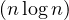 in time, and can be used on weighted graphs. In addition, it provides hierarchical communities, allowing us to define the level of detail of the communities, and also to obtain subcommunities within communities. A sample visualization is the following:
In more precise terms, the phase 1 goes as follows: what is ΔQ if we move a node v from CJ to CI:
But how can we derive ΔQCI∪? The key here is that the gain in modularity does not depend on the original community of v. It can easily be computed by moving an isolated node v into CI:
and therefore
On the other side,
so
Therefore, the gain only depends on dv,in and C.
The complete algorithm is:
For each node v:
Compute modularity gain from removing v from its community and placing it in the community of its neighbours.
Place v in the community that maximizes ΔQ.
One iteration is achieved for all the nodes in a sequential manner.
Repeat the procedure sequentially to all nodes until no more improvement (local maximum of modularity).
The output of this phase depends on the order in which nodes are considered. Research shows that this does not significantly affect the overall modularity.
Nodes from communities are grouped into super nodes.
Links between nodes of the same community c are represented by self-loops weighted by adding up the links between these nodes: c has a loop edge with weight
Links between communities are weighted by adding up the links between community’s nodes. Each has a link with weight
This other approach is based on random walks. The idea is to consider a random walk on a graph, in which at each time step, we move to neighbours uniformly at random:
and Pijt represents the probability to get from i to j in t steps.
We would think that two nodes i and j that lie in the same community should have a high Pijt, as well as similar Pikt ~ Pjkt, for different k. Therefore, we can define a distance (or similarity) between nodes, as
In addition, we approximate the computation by
where Nik is the number of walks starting at i and passing through k, and Ni is the number of walks starting from i.
The approach goes as follows:
Assign each node to its own community.
Compute the distance between adjacent nodes, rij.
Choose the two closest communities and merge them.
Update the distance between communities, as
where
Finish when there is only one community.
Edge betweenness of e is the fraction of shortest paths between all nodes s and t going through edge e:
In this case, we focus on edges that connect communities, and construct them by progressively removing edges with the highest betweenness value. It goes as:
For all e ∈ E
Compute ebt
Remove the edge e with largets ebt
Repeat until all edges are gone. Stop when it splits in 2 components. The output is a dendogram.
[1] Jure Leskovec, Kevin J. Lang, Anirban Dasgupta, and Michael W. Mahoney. Community structure in large networks: Natural cluster sizes and the absence of large well-defined clusters, 2008.
[2] Gergely Palla, Imre Derényi, Illés Farkas, and Tamás Vicsek. Uncovering the overlapping community structure of complex networks in nature and society. Nature, 435(7043):814–818, 2005.
[3] Nacéra Seghouani. Massive graph management and analytics. Lecture Notes.


 , with adjacency matrix
, with adjacency matrix  , with adjacency matrix
, with adjacency matrix  , with adjacency matrix
, with adjacency matrix  , with adjacency matrix
, with adjacency matrix  , the
, the